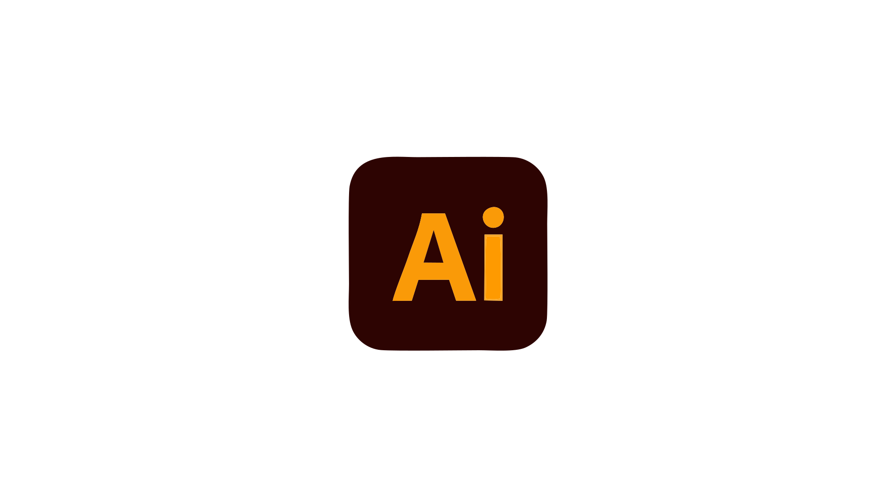
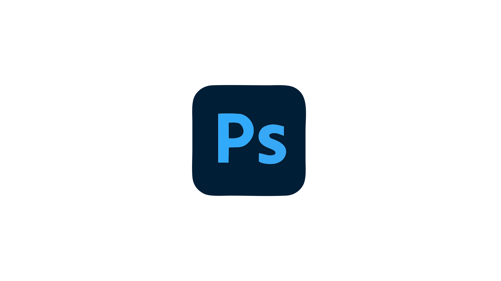
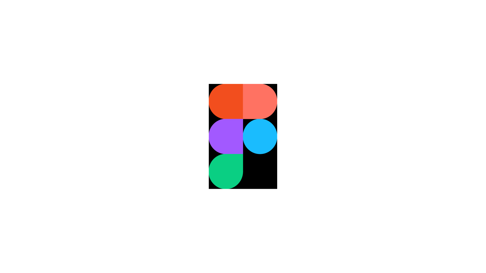
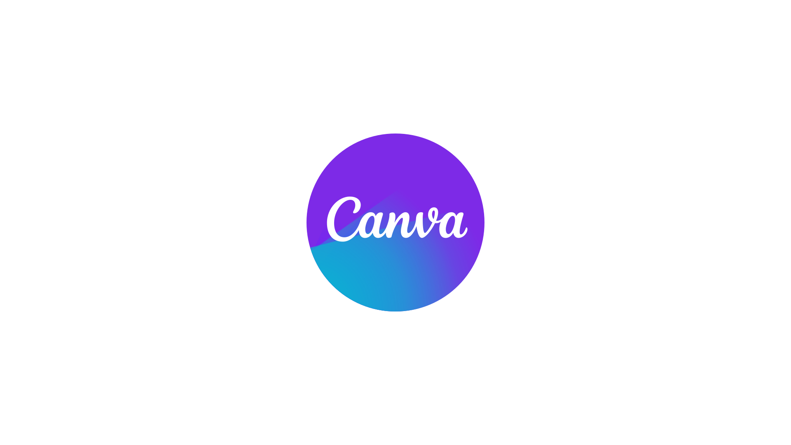
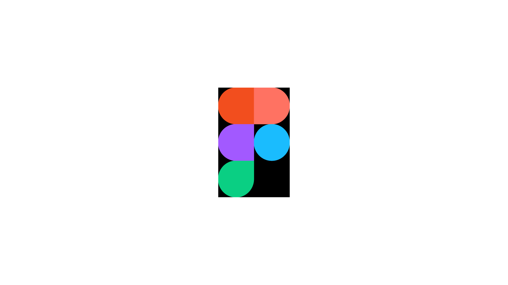
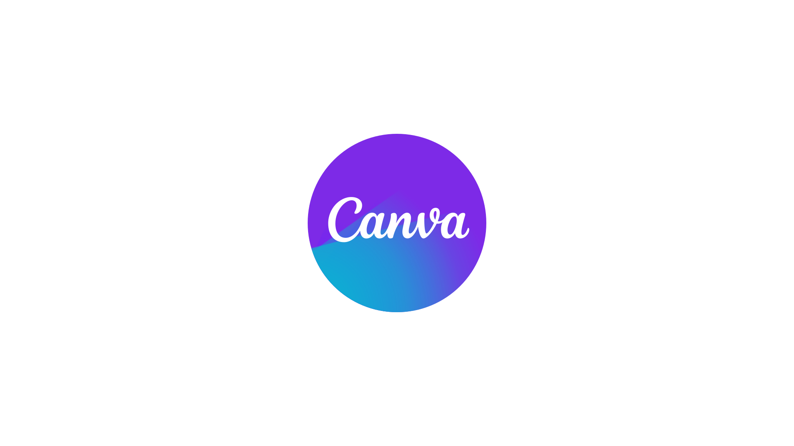

Bonjour, moi c'est Bintou Traore
Je suis Concepteur UI passionné par la création d'expériences utilisateur intuitives et esthétiques.
Mon objectif est de transformer des idées complexes en interfaces simples et efficaces.
Mes Compétences Clés
- Design d'Interface Utilisateur (UI)
- Expérience Utilisateur (UX)
- Prototypage
- Wireframing
- Recherche Utilisateur
- Gestion de Projet Web & E-commerce
- Stratégie Webmarketing & SEO
- Intégration Web (HTML, CSS)
- Gestion de site Web (WordPress)
- Conception Graphique & Visuelle (Print & Digital)
- Création de Contenu Vidéo
- Web Analytics & Optimisation de Sites
Outils que j'utilise


 


